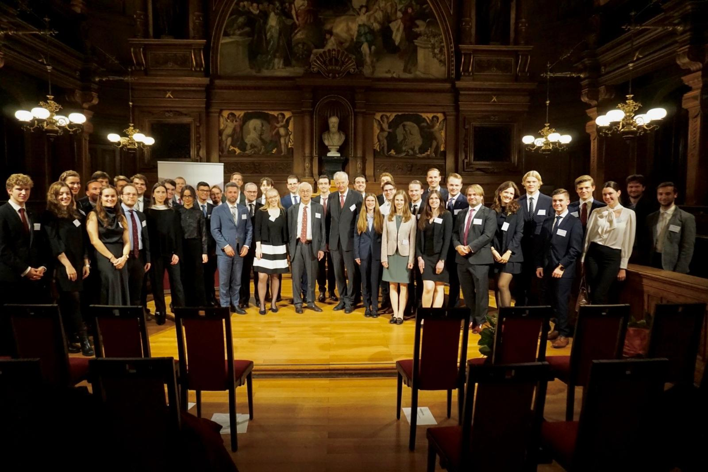

Namenspate & Geschichte des Inns
Die lokalen Chapter von Phi Delta Phi werden traditionell als „Inns“ bezeichnet und nach einer prägenden Persönlichkeit des Rechts benannt.
Prof. Dr. Hanno Kube, LL.M. (Cornell)
Namenspate unseres Heidelberger Inns ist Prof. Dr. Hanno Kube, LL.M. (Cornell), Direktor des Instituts für Finanz- und Steuerrecht an der Ruprecht-Karls-Universität Heidelberg.
Nach dem Studium der Rechtswissenschaft in Heidelberg und an der Cornell University (USA) wurde er in Heidelberg bei Prof. Dr. Paul Kirchhof promoviert und habilitiert. Nach Lehrstühlen an der Katholischen Universität Eichstätt-Ingolstadt und der Johannes Gutenberg-Universität Mainz folgte er 2014 dem Ruf an die Universität Heidelberg als Nachfolger seines akademischen Lehrers Paul Kirchhof.
Neben seiner Forschungs- und Lehrtätigkeit im Staats-, Verfassungs-, Finanz- und Europarecht vertritt er regelmäßig Verfassungsorgane in bedeutenden verfassungsrechtlichen Verfahren vor dem Bundesverfassungsgericht.
Gründung 2014 als Paul Kirchhof Inn und Weiterführung als Hanno Kube Inn
Das Heidelberger Inn wurde im Jahr 2014 unter der Schirmherrschaft des ehemaligen Richters des Bundesverfassungsgerichts Prof. Dr. Dres. h.c. Paul Kirchhof als Paul Kirchhof Inn Heidelberg e.V. gegründet. Mit der Umbenennung in Hanno Kube Inn Heidelberg e.V. wird diese Heidelberger Tradition am Institut für Finanz- und Steuerrecht in der nächsten akademischen Generation fortgeführt.
